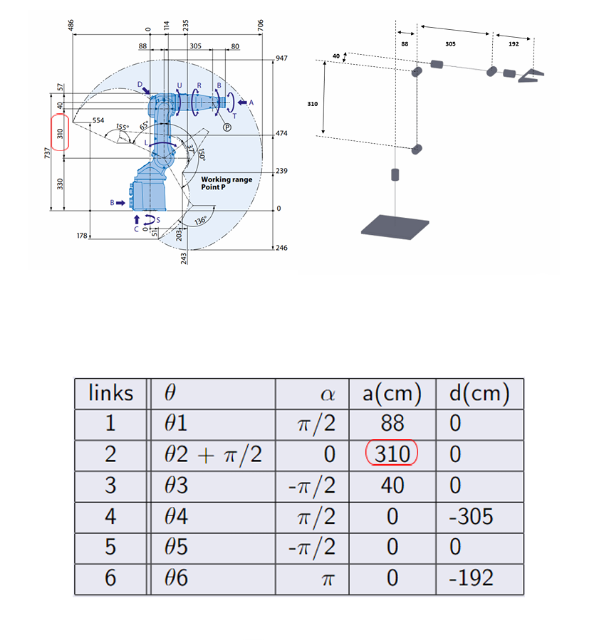
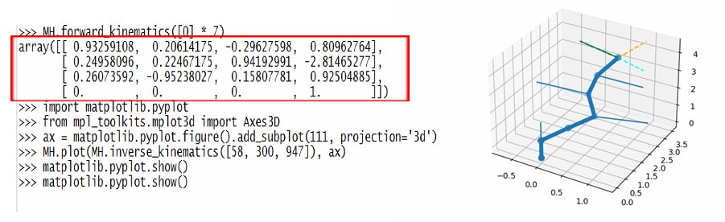
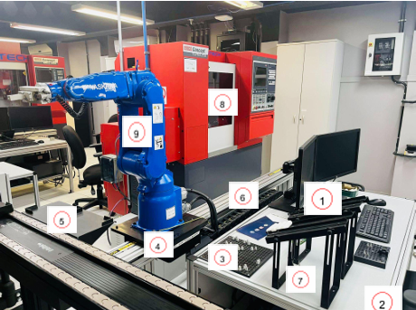
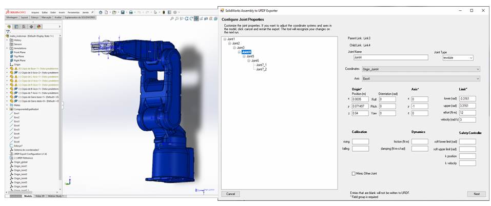

Internship Project – Digital Twin of a CIM System Using ROS
Context and Objectives
During my fourth year at INSA Hauts-de-France, I completed an internship at the Instituto Militar de Engenharia (IME) in Brazil. The main objective was to contribute to the development of a digital twin of the Computer Integrated Manufacturing (CIM) system at the MecatrIME laboratory.
My responsibilities included researching robotic kinematics, translating the kinematic model into a digital simulation, and integrating various components with ROS (Robot Operating System).
Methodology and Tools
Kinematic Modeling
The first stage focused on forward and inverse kinematics—understanding how joint angles relate to the position of a robotic arm’s end-effector. I applied the Denavit-Hartenberg (DH) convention to model the structure of the Motoman MH5F robotic arm, assigning coordinate frames and calculating homogeneous transformation matrices for each joint.
These transformations allowed me to generate an accurate DH representation of the robot, forming a foundation for motion planning, simulation, and control strategies.
Python IKPY Library
To begin simulating the robotic arm, I used the Python IKPY library to compute forward kinematics based on the DH parameters. This provided an initial visualization of the robot’s reach and joint behavior.
However, to build a more comprehensive simulation—including environment interactions—we moved to ROS for advanced modeling and control.
ROS Integration and RViz Simulation
At Station 2 of the CIM line, the MH5F robotic arm performs automated tasks such as moving raw parts from a conveyor to a buffer and onto a CNC lathe. This requires highly precise spatial positioning and joint coordination.
I began by exporting the robotic arm model from SolidWorks to URDF and assembling it into a ROS package. After transferring the files to my ROS workspace, I configured them for Gazebo simulation and wrote the necessary launch files.
Using MoveIt and RViz, I implemented dynamic joint control. I recorded encoder values, converted them into radians, and simulated precise arm movements that matched the real industrial process.
Results
The simulation of Station 2 and its robotic components was successfully achieved. The setup successfully reflected key aspects of the physical station, and RViz provided useful visualizations of joint movements and kinematic paths.
This digital twin helped improving understanding of the system’s behavior but also highlighted the potential for advanced features like collision avoidance and motion optimization in future iterations.